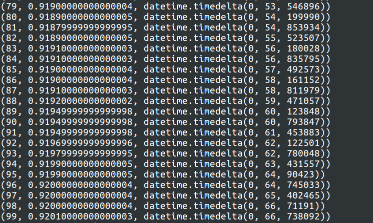
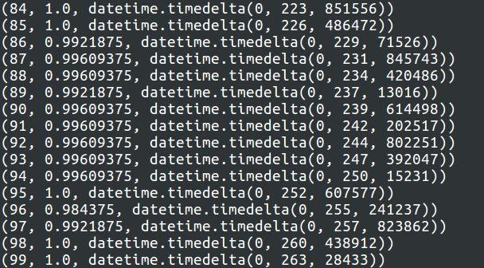
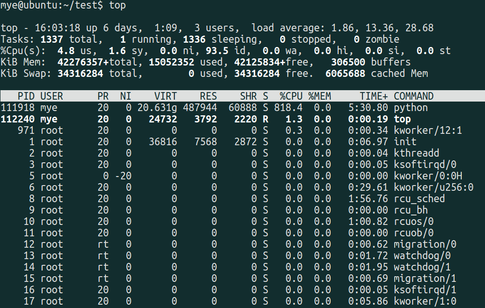

一、GPU服务器
服务器 IP ：172.xx.xx.98 （4块NVIDIA TITAN X GPU，32 CPU核心）
|
|
|
|
使用 cat /proc/cpuinfo 命令可以查看每一个cpu核详细信息.
二、CPU服务器
服务器 IP ：113.xx.xxx.196 （纯CPU服务器，128核）
|
|
使用 cat /proc/cpuinfo 命令可以查看每一个cpu核详细信息.
三、mnist测试
(1)逻辑回归logistic测试
Example: 02_logistic_regression.py
测试结果：
a.batch_size : 128
| — | GPU | CPU |
|---|---|---|
| top信息 | %CPU：244.2 | %CPU：472 |
| nvidia-smi信息 | 20%左右 | 无 |
| mnist运行结果 | (99, 0.9234, datetime.timedelta(0, 68, 913616)) 统计：68s/100轮 |
(99, 0.92330000000000001, datetime.timedelta(0, 101, 424780)) 统计：101s/100轮 |
b.batch_size : 256
| — | GPU | CPU |
|---|---|---|
| top信息 | %CPU：214.1 | %CPU：781.1 |
| nvidia-smi信息 | 24%左右 | 无 |
| mnist运行结果 | (99, 0.92290000000000005, datetime.timedelta(0, 45, 724627)) 统计：45s/100轮 |
(99, 0.92300000000000004, datetime.timedelta(0, 79, 207202)) 统计：79s/100轮 |
c.batch_size : 512
| — | GPU | CPU |
|---|---|---|
| top信息 | %CPU：203.2 | %CPU：1031 |
| nvidia-smi信息 | 29%左右 | 无 |
| mnist运行结果 | (99, 0.92000000000000004, datetime.timedelta(0, 30, 479467)) 统计：30s/100轮 |
(99, 0.92010000000000003, datetime.timedelta(0, 66, 738092)) 统计：66秒/100轮 |
GPU运行结果：

|
|

CPU运行结果：


(2)卷积神经网络conv测试
Example : 05_convolutional_net.py
测试结果：
a.batch_size : 128
| — | GPU | CPU |
|---|---|---|
| top信息 | %CPU：141.9 | %CPU：5224.3 |
| nvidia-smi信息 | 75%左右 | 无 |
| mnist运行结果 | (0, 0.93359375, 4, 230888) (1, 0.984375, 7, 929353) (2, 0.97265625, 11, 635471) (3, 0.98828125, 15, 310449) (4, 0.9921875, 19, 3371) (5, 0.98828125, 22, 720680) (6, 1.0, 26, 384165) (7, 0.99609375, 30, 88245) …… (99, 0.9921875, 370, 693523) 平均：3.7s/轮 |
(0, 0.95703125, 54, 907580) (1, 0.98046875, 111, 935452) (2, 0.98828125, 169, 417860) (3, 0.98046875, 227, 60819) (4, 0.9921875, 284, 513000) (5, 0.98828125, 342, 273721) (6, 0.9921875, 399, 981951) (7, 0.984375, 458, 23667) (8, 0.99609375, 516, 282659) …… 平均：57s/轮 |
b.batch_size : 256
| — | GPU | CPU |
|---|---|---|
| top信息 | %CPU：114.4 | %CPU：5746 |
| nvidia-smi信息 | 82%左右 | 无 |
| mnist运行结果 | (0, 0.6796875, 3, 563670) (1, 0.9609375, 6, 565172) (2, 0.96875, 9, 520787) (3, 0.98828125, 12, 552352) (4, 0.9921875, 15, 509898) (5, 0.984375, 18, 508712) (6, 0.9921875, 21, 465722) …… (99, 1.0, 301, 239776) 平均：3s/轮 |
(0, 0.69921875, 37, 712726) (1, 0.97265625, 75, 387519) (2, 0.984375, 113, 36748) (3, 0.98828125, 150, 694555) (4, 0.98828125, 188, 393595) (5, 0.984375, 225, 962947) (6, 0.98046875, 263, 551988) (7, 0.9921875, 301, 107670) …… 平均：37s/轮 |
c.batch_size : 512
| — | GPU | CPU |
|---|---|---|
| top信息 | %CPU：98.5 | %CPU：5994 |
| nvidia-smi信息 | 90%左右 | 无 |
| mnist运行结果 | (0, 0.09375, 3, 358815) (1, 0.52734375, 5, 918648) (2, 0.91796875, 8, 488475) (3, 0.9296875, 11, 35129) (4, 0.98046875, 13, 605235) (5, 0.96875, 16, 148614) (6, 0.984375, 18, 715051) (7, 0.9765625, 21, 281468) (8, 0.9921875, 23, 854374) …… (99, 1.0, 263, 28433) 平均：2.63s/轮 |
(0, 0.08203125, 31, 125486) (1, 0.796875, 62, 543181) (2, 0.91015625, 94, 522874) (3, 0.9609375, 126, 946088) (4, 0.96484375, 159, 929706) (5, 0.95703125, 193, 230872) (6, 0.9921875, 226, 695604) (7, 0.98828125, 260, 43828) (8, 0.9921875, 293, 214191) (9, 0.99609375, 326, 797200) …… 平均：32.6s/轮 |
GPU运行结果：

|
|

CPU运行结果：


(3)循环神经网络lstm测试
Example : 07_lstm.py
测试结果：
batch_size : 512
| — | GPU | CPU |
|---|---|---|
| top信息 | %CPU：123.4 | %CPU：818.4 |
| nvidia-smi信息 | 40%左右 | 无 |
| mnist运行结果 | (0, 0.26953125, 2, 390310) (1, 0.37890625, 4, 420676) (2, 0.68359375, 6, 385682) (3, 0.7421875, 8, 494356) (4, 0.7890625, 10, 649750) (5, 0.84375, 12, 547186) (6, 0.83203125, 14, 657817) (7, 0.8671875, 16, 743615) (8, 0.87109375, 18, 737803) …… …… (99, 0.96875, 202, 633241) 平均：2.02s/轮 |
(0, 0.2265625, 10, 367446) (1, 0.3984375, 20, 716101) (2, 0.61328125, 31, 403893) (3, 0.734375, 42, 7851) (4, 0.75, 52, 698565) (5, 0.78515625, 63, 61517) (6, 0.84765625, 73, 529780) (7, 0.84765625, 84, 130221) (8, 0.8828125, 94, 898270) (9, 0.90234375, 105, 455608) …… (99, 0.98046875, 995, 356187) 平均：9.95s/轮 |
GPU运行结果：

|
|

CPU运行结果：


注：关于训练中每个epoch时间统计，可以使用python datetime 模块，使用datetime.datetime.now() 获取系统时间。